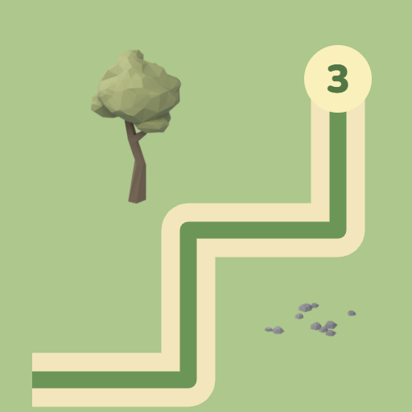

<- all projects

One Path Park
PC
Volume
Live
Draw one path. Light up the park.
An old park has stories waiting along every path. Help ranger Kit reconnect its landmarks and prepare a welcoming evening walk for the whole neighborhood. Each park is a route-drawing puzzle: start at K, finish at the arrow, visit every numbered landmark and never step on the same tile twice. Trees, rocks and water are off limits, bridges are crossed straight and one-way gates open in only one direction, while later parks ask for the landmarks in numerical order. There are 180 parks across six seasonal chapters with five tile rules, plus a daily park and 90 ranger routes.